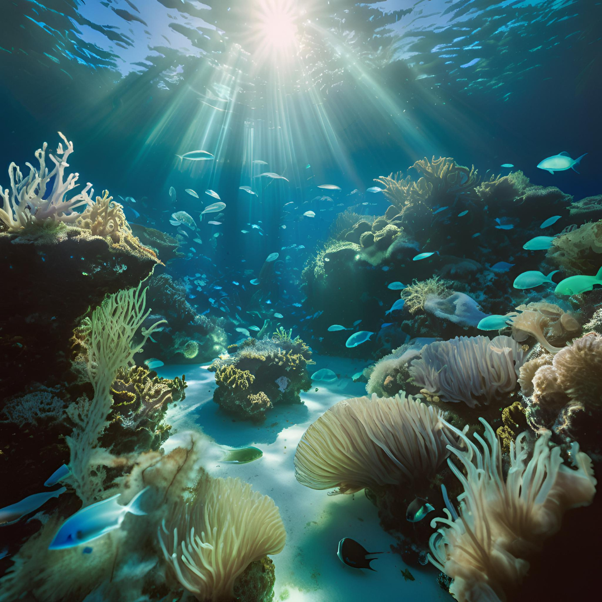
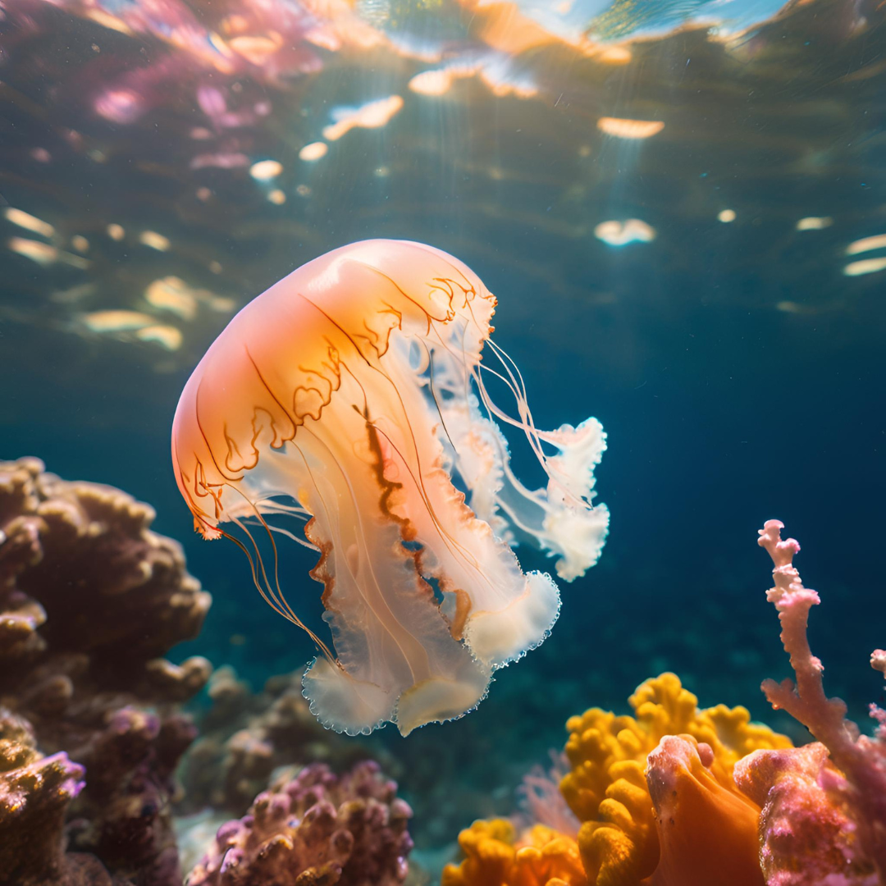
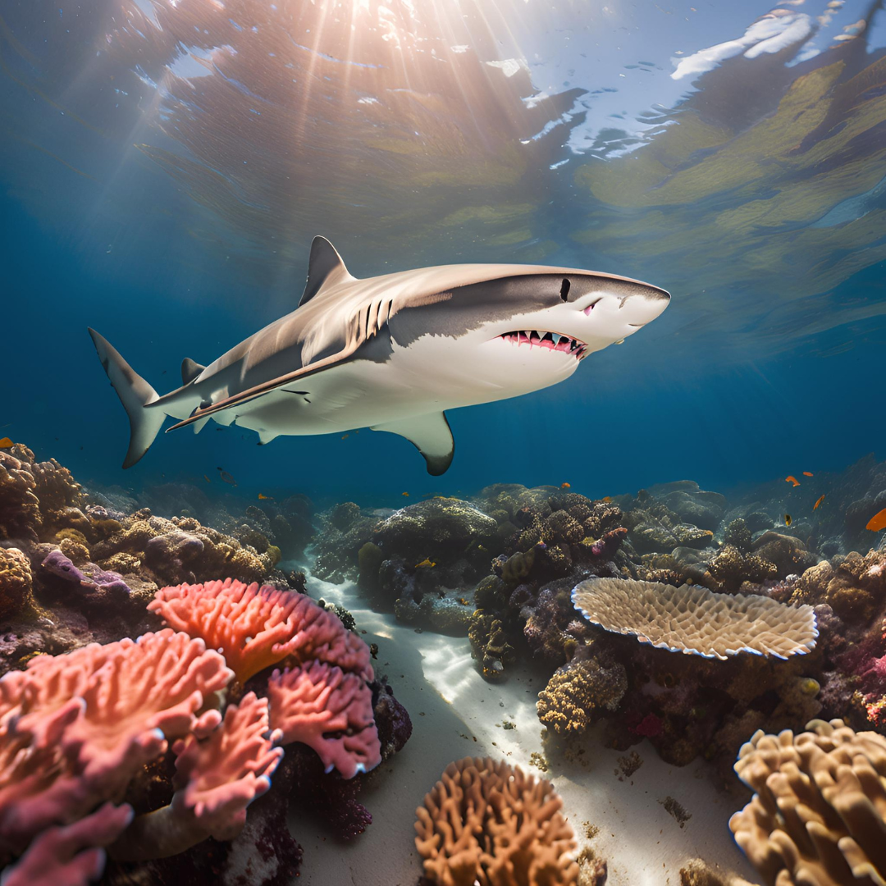

ZONA MESOPELÁGICA
INFORMACIÓN
La zona mesopelágica del océano, también conocida como zona de crepúsculo, se encuentra entre los 200 y 1,000 metros de profundidad bajo la superficie del mar. En esta zona, la luz solar es muy tenue, y solo llega una pequeña cantidad de luz difusa, lo que limita la fotosíntesis. La temperatura disminuye considerablemente a medida que se desciende, y las aguas se vuelven más frías y oscuras.

×


×


×

!Toca la Gaviota para volver a inicio¡
ESPECIES MARINAS:
1. Peces bioluminiscentes
- Anguilas de la familia Anguilliformes:
Muchas especies de anguilas viven en esta zona, y algunas tienen órganos bioluminiscentes para atraer presas o para defenderse.
- Peces linterna:
Son uno de los grupos más comunes en la zona mesopelágica. Estos peces tienen órganos luminosos en sus cuerpos que producen luz para atraer presas y comunicarse.
- Gobios:
Algunos gobios también habitan en la zona mesopelágica, adaptados a las condiciones de oscuridad.
2. Calamares y pulpos
- Calamares del género Loligo y Ommastrephidae:
Estos calamares están adaptados para vivir en la oscuridad, y algunos tienen la capacidad de generar luz a través de bioluminiscencia.
- Pulpos mesopelágicos:
Como el pulpo Grimpoteuthis (conocido como el pulpo "muerto"), que habita en estas profundidades y tiene adaptaciones especiales para moverse y cazar en la oscuridad.
3. Medusas
- Medusas:
Muchas especies de medusas habitan en la zona mesopelágica. Algunas tienen bioluminiscencia y se alimentan de plancton y pequeños peces
4. Camarones y krill
- Krill mesopelágico:
Son pequeños crustáceos que forman una parte importante de la cadena alimenticia en la zona mesopelágica, sirviendo de alimento para muchos peces y otros organismos.
- Camarones de profundidad:
Diversas especies de camarones habitan en la zona mesopelágica y son una fuente clave de alimento para otros depredadores.
5. Ciertas especies de tiburones y rayas
- Tiburón Somniosus (tiburón de Groenlandia):
Aunque se encuentra a mayores profundidades, algunas especies de tiburones habitan la zona mesopelágica en busca de presas como calamares y peces.
- Raya de profundidad:
Algunas rayas habitan estas profundidades y se alimentan de invertebrados y pequeños peces.
6. Especies de plancton
- Plancton zooplanctónico:
Es una parte fundamental del ecosistema de la zona mesopelágica, donde los pequeños organismos flotantes, como los copepodios, se alimentan de fitoplancton y sirven de alimento para peces más grandes.